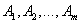
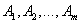
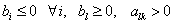

ОПОРНОЕ РЕШЕНИЕ ЗАДАЧИ ЛИНЕЙНОГО ПРОГРАММИРОВАНИЯ
Рассмотрим нахождение начального опорного решения и переход к новому опорному решению задачи линейного программирования.
Пусть имеется задача линейного программирования в канонической форме
Будем считать, что правые части всех уравнений системы ограничений неотрицательны. Если в каком-либо уравнении правая часть отрицательна, то это уравнение нужно умножить на -1.
Опорным решением задачи линейного программирования называется допустимое решение  , для которого векторы условий (столбцы коэффициентов при неизвестных в системе ограничений) ,
соответствующие положительным, линейно независимы.
, для которого векторы условий (столбцы коэффициентов при неизвестных в системе ограничений) ,
соответствующие положительным, линейно независимы.
Число отличных от нуля координат опорного решения не может быть больше ранга r системы векторов условий (числа линейно независимых уравнений системы ограничений). В дальнейшем будем считать,
что система ограничений состоит из линейно независимых уравнений, то есть .
Если число отличных от нуля координат опорного решения равно m, то решение называется невырожденным, в противном случае (меньше  ) - вырожденным.
) - вырожденным.
Базисом опорного решения называется базис системы векторов условий задачи, включающий в свой состав векторы, соответствующие отличным от нуля координатам опорного решения.
Базисное решение находится методом Жордана-Гаусса. При этом разрешающие элементы для преобразования Жордана необходимо выбирать из условия, обеспечивающего неотрицательность правых частей уравнений системы.
Пусть разрешающим элементом для преобразования Жордана является коэффициент  при неизвестнойв уравнении с номером .
В результате преобразования Жордана правые части уравнений пересчитываются по следующим формулам:
при неизвестнойв уравнении с номером .
В результате преобразования Жордана правые части уравнений пересчитываются по следующим формулам:
- Для того чтобы правая часть уравнения с разрешающим элементом оставалась неотрицательной, должно выполняться неравенство
Так как , то первое условие для разрешающего элемента состоит в том, что он должен быть положительным, т.е.
- Неотрицательными также должны быть правые части остальных уравнений, т.е.
Для получения требований, налагаемых на разрешающий элемент , рассмотрим два случая:
- Если , то в силу того, что , без дополнительных условий ,;
- Если же , то неравенство поделим на , получим ;
Данное неравенство должно выполняться для любого уравнения с номером , в котором . Для удобства вычислений вводят вспомогательный параметр 
 Здесь
Здесь  – номер вектора условия
– номер вектора условия  , вводимого в базис (номер выбираемого столбца матрицы системы ограничений), а – номер вектора
, вводимого в базис (номер выбираемого столбца матрицы системы ограничений), а – номер вектора  , выводимого из базиса
(номер строки матрицы системы, в которой следует выбирать разрешающий элемент для преобразования Жордана).
, выводимого из базиса
(номер строки матрицы системы, в которой следует выбирать разрешающий элемент для преобразования Жордана).
С помощью данного условия можно выбирать разрешающий элемент в любом столбце k матрицы системы ограничений, в котором имеется хотя бы один положительный элемент.
Если при выборе разрешающего элемента данное условие нарушается, в правой части системы уравнений появляются отрицательные величины.
Используя данное условие, можно получить допустимое базисное решение, которое является начальным опорным решением.
Аналогичное условие используется при переходе от одного опорного решения к другому.
Пусть система уравнений-ограничений путем выбора разрешающих элементов приведена к равносильной разрешенной так, что правые части системы сохранились неотрицательными, и имеет вид
Тогда базисное решение является допустимым и опорным решением с базисом из единичных векторов .
Для перехода от этого опорного решения к новому необходимо использовать соотношение  при
где – номер вектора, вводимого в базис; – номер вектора, выводимого из базиса; - координаты опорного решения; - коэффициенты разложения вектора по базису опорного решения.
при
где – номер вектора, вводимого в базис; – номер вектора, выводимого из базиса; - координаты опорного решения; - коэффициенты разложения вектора по базису опорного решения.